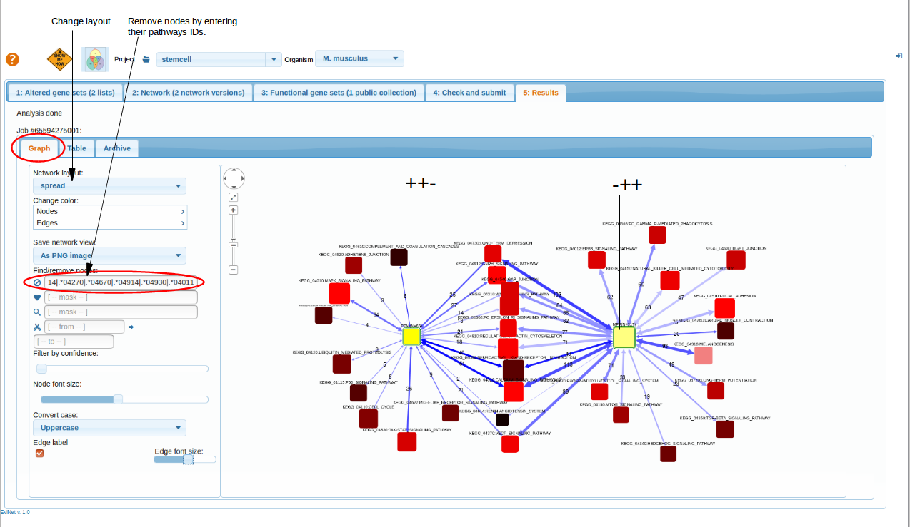

Using Venn diagrams
The idea of Venn diagram tool is to allow users working with a pre-computed file of differential expression (DE) values. Often, there are more than one contrast (comparison), and preparing DE lists off-line (e.g. in Excel) and then uploading them to EviNet is not very convenient. And again, there are no Venn diagrams in Excel.
- Prepare file for the upload
- Upload a file
- Choose number of comparisions
- Select contrasts and Cutoff criterias
- Understanding Venn-Diagrams
- Select Altered Genes Sets
- Select Networks and Functional Gene Sets
- Results
Prepare file for the upload
First, you have to prepare a file for the upload: it has to have columns that quantify DE and be understood by the header parser. At the moment, we support only one DE file format, the one currently used in the example in the project "stemcell" and also downloadable from the downloads directory. Note that the file name should contain the keyword "VENN" (or ".venn"). Given a simplest case of 3 different RNA-seq or microarray samples A, B, and C, your file might have contrasts "A vs. B" and "C vs. B". And you might have compared "A vs. C" as well, if it fits the idea of your experiment. If you calculated fold change values and accompanied them with p-values and adjusted p-values (FDR), then the header should have at least the following column headers.
The most important elements here are the delimiters:
- condition names should be separated with "vs" and then
- the value type (one of FC, P, FDR) is separated with "-"
top
Upload a file
The file is submitted in "Altered gene sets" -> "File" -> "Upload local file". Be patient, uploading can take time and
even get crashed. But as soon as it is done, you can always find it in the same section . Please click "Refresh list" if you dont see file after uploading.
Click "Venn diagram" button for further analysis.
top
Choose number of comparisions
By choosing the number of comparisons, number(n) of cross comparisons can be selected and represented by n circles in venn-diagram.
top
Select contrasts and Cutoff criterias
After choosing 'n' you are going to see a set of controls that reflect the content of your DE file.
The ranges of cut-off sliders are defined by min/max values of each column. Note that the left and right fold change sliders correspond to down/up-regulation,
respectively. Their ranges end/begin at 0. In other words, this would only work with log fold change values.
Tip: If you want to only look at down-or only up-regulated genes, then you should set the other (right or left, respectively) slider in its utmost position, as it is done in the 1st and 2nd lines at the screenshot. This trick should filter out any genes with expression change in that direction. The filtering criteria are applied line-wise, i.e. there will be one DE list from contrast "WT_Nondiff_ESCs_Control_vs_WT_Nondiff_1_Control", where expression pattern of each gene satisfies both the FC and FDR criteria, then another list for "WT_Nondiff_ESCs_Control_vs_WT_Nondiff_2_Control" and yet another for "WT_Nondiff_ESCs_Control_vs_WT_Nondiff_3_Control". Overlaps of these three will be reflected at the Venn diagram when you press the button "Generate Venn Diagram".
top
Understanding Venn-Diagrams
After click "Ready?Generate Venn Diagram", venn-diagram is created based on the number of comparisons (contrasts) chosen and cutoff criteria. The labeling of venn diagram areas might look
confusing. And it is indeed not trivial to label them without sacrificing readability. We thus propose this convention: labels consist of pluses and minuses which
indicate that genes satisfy conditions of respective contrasts (lines of sliders). The order of +/- characters is the same as in the lines. For example,
"+--" means that the genes fell within the criteria of contrast 1, "WT_Nondiff_ESCs_Control_vs_WT_Nondiff_1_Control", and did not within those of contrasts 2 and 3.
top
Select Altered Genes Sets
By clicking at the intersection areas, you can get respective gene tables.
You can pop up an arbitrary number of gene lists: from one to as many as there are non-zero intersections in the diagram.
Each of these lists can be automatically sent to NEA (as soon as you have chosen a network and FGS set).
Note: only visible gene lists with box in the upper right corner checked will be treated as AGS. A tip: you can also filter/sort genes and copy some/all gene symbols with "Ctrl+mousedown" and then use just these by pasting this new list in "Plain list" section above. Do not forget then to uncheck the box near the button "Generate Venn Diagram".
The "Search" is used to look for particular gene DE vales(FC/p/FDR) across various contrasts.
top
Select Networks and Functional Gene Sets
Select a Network and then Functional Gene Sets. For more details go through: Selecting Network, Selecting Functional Genesets.
After selecting AGS,FGS and NW review the parameters before running analysis Check and Submit.
top
Results

top